Objectives
- Provide an overview of trees and their terminology
- Examine applications that use trees.
Introduction
A tree is a fundamental data structure in computer science that
illustrates a hierarchical relationship between data. A very basic tree
looks like this:
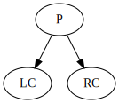
We say that P is the parent of LC and RC. LC is the child of
P. (I named it LC because it is the left child of P; what does RC
stand for?) All three — P, LC, and RC — are nodes of the
tree.
Even though LC is the child of P, it can have children of its own. In the
following graph, LC is both a parent and a child. It is the child of P and
the parent of LC.LC.
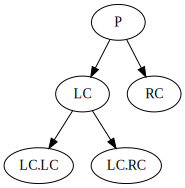
A node that has no parent is special, it is the root of
the tree:
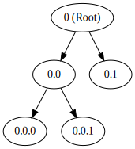
A node that has no children is also special. It is a leaf.
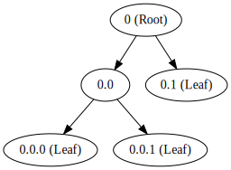
Vocabulary
Below is a graph with common terms for relationships in trees.
* Notice how counting begins at level zero!
Binary Tree
The tree shown above is a special type of tree known as a binary tree which means that a
node can have 0, 1, or 2
children.
When a tree
- has height h, and
- all of its leaves are at level h, and
- all nodes that have children have exactly two children, then
it is a special kind of tree known as a full binary tree.
In a complete binary tree, all nodes that have children must have two
children. Also, the tree is filled from left to right, as shown below. If,
however, node R had two children, the below tree woud not be complete.
General Trees
A general tree has no
restriction on the number of children a node may have.
Traversals of a Binary Tree
Consider the following tree
A traversal involves visiting a node exactly once. For
example, we may traverse the tree above by visiting J, F, T, C, H, W, A,
D, V, and Z in that order. There are many different possible traversals.
Can you think of another one?
Although we may define a traversal by listing the nodes in order, as
we did above, we may also define traversals algorithmically. To
do this, we must first define a tree in a recursive way. A recursive
definition defines an object in terms of itself. We will define big
trees in terms of smaller trees.
A binary tree is either
- a root that has two binary trees as children, or
- empty
All binary trees can be defined this way.
For example, the following tree:
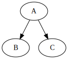
can be defined as a collection of seven little recursive trees, as
shown below:
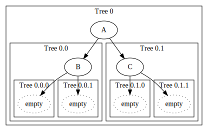
Can we define the following tree recursively?
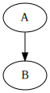
Yes. It can be broken down into five little recursive trees.
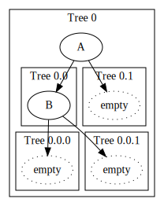
Pre-Order Traversal
Instead of providing the order of the nodes, we will traverse the
following tree by providing an algorithm :
1. Visit the root
2. Traverse left subtree
3. Traverse right subtree
Note that this is a recursive algorithm. The pre-order traversal
visits the nodes in the following order:
J, F, C, A, D, H, T, W, V, Z
In-Order Traversal
1. Traverse left subtree
2. Visit the root
3. Traverse right subtree
The output
A, C, D F, H, J, T, V, W, Z
Post-Order Traversal
1. Traverse left subtree
2. Traverse right subtree
3. Visit the root
The output
A, D, C, H, F, V, Z, W, T, J
Binary Search Trees
A binary search tree (BST) is a special type of tree with the
following requirement
Constructing Binary Search Trees
Inserting the following elements into a binary search tree
16, 19, 2, 4, 3, 1, 9, 12, 18, 27
Deleting from a Binary Search Tree
Three Cases:
#1 - Removing a Leaf Node
This is trivial.
#2 - Removing a Node with One Child
#3 - Removing a Node with Two
Children
To delete the value, we will actually swap it out for a value that will
not distrupt the BST's structure. Then we will delete the extra copy of the
value that was swapped in. The illustrated algorithm is below:
- Pick a successor to the node that will be deleted. The
successor is a node that contains the value that is closest to the
value of the node to be deleted. This is either then next largest
number or the next smallest number. Therefore, the successor is either
the right-most node in the left subtree (next smallest) or the leftmost
node in the right subtree (next largest). In the figure below, the next
smallest is 30 and the next largest is 55. Either one could be the
successor.
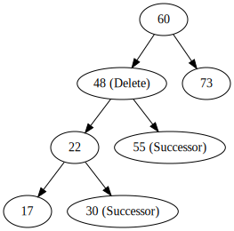
- Copy the value of the successor into the node whose value will be
deleted. This remnoves the desired value from the tree, but leaves an
extra copy of the successor. In the following figure, we chose 30 as
the successor. We could have chosen 55 as well.
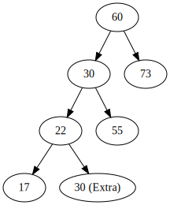
- Delete the successor node since it contains the extra copy.
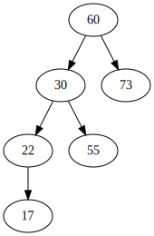